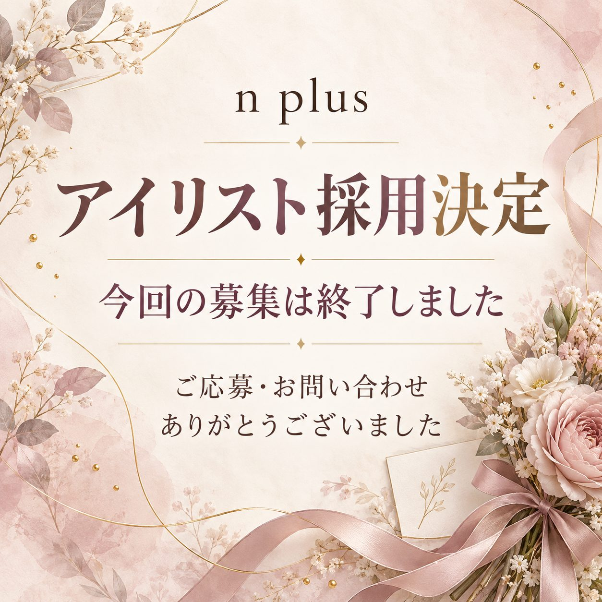

【n plus】アイリストの採用が決まりました。今回の募集を終了します🌸
こんにちは！
株式会社アトリエ・ナイン代表の菅野です😊
今回は、n plusの採用についてご報告です。
アイリストの採用が決まりましたので、今回のアイリスト募集を終了いたします。
ご応募・お問い合わせいただいた皆さま、本当にありがとうございました✨
■ 新しい仲間とのご縁に感謝
たくさんのサロンがある中で、アトリエ・ナインに関心を持っていただき、働く場所として選んでいただけたことをうれしく思っています。
採用が決まると、うれしさと同時に、迎える側としての責任も改めて感じます。
安心して仕事を始められるように、技術や接客、サロンでの仕事の流れを共有しながら、しっかり支えていきたいと思っています🌿
■ お客様にも、スタッフにも、より良いサロンへ
n plusでは、これからも掛け持ちをせず、一人ひとりのお客様と丁寧に向き合う時間を大切にしていきます。
新しい仲間とともに、お客様に喜んでいただけるサロンをつくっていきたいと思います😊
今後とも、n plusをよろしくお願いいたします！
■ 美容師の募集は引き続き行っています✂️
今回終了するのは、アイリストの募集です。
hair atelier nineでは引き続き、
・美容師アシスタント＜中途・新卒＞
を募集しています。
美容師として次の一歩を考えている方は、ぜひお気軽にご相談ください。
サロン見学も受け付けています🏠✨
【美容師求人・お問い合わせ】
https://atelier-nine-recruit.netlify.app/
――――――――――
株式会社アトリエ・ナイン
代表 菅野 勇紀
福島市で hair atelier nine（森合店・岡部店）と、アイラッシュサロン n plus を運営しています。
Instagram：atelier_nine.kanno
#福島市 #nplus #アイリスト採用 #美容師求人 #アトリエナイン
